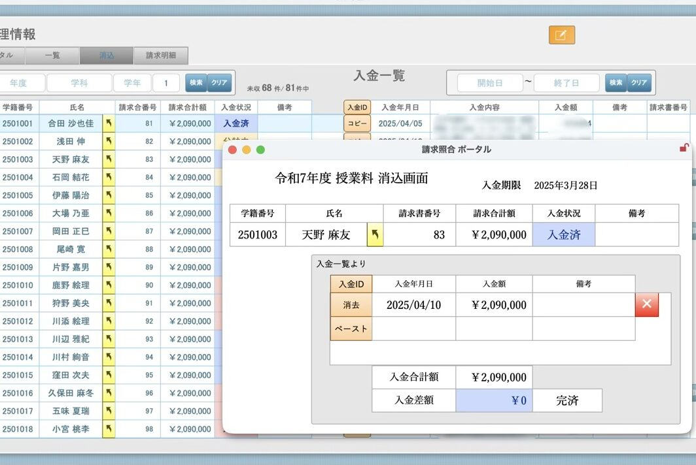
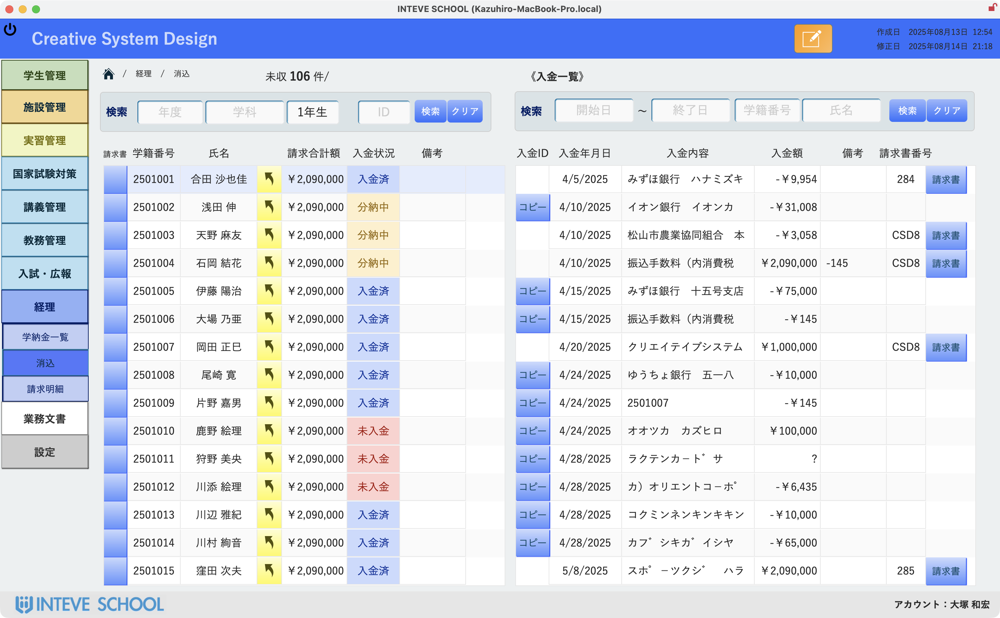
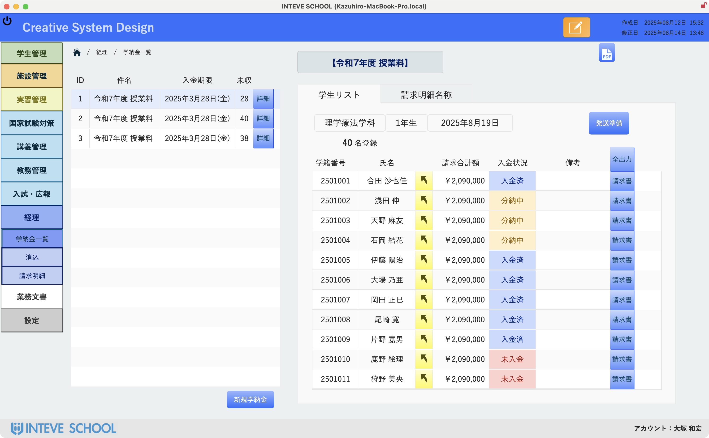
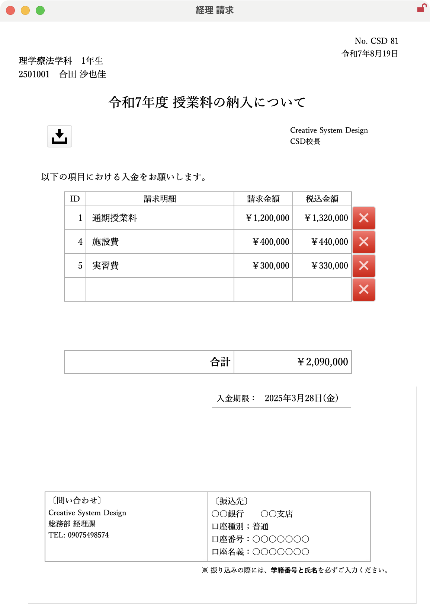

学校経理の「面倒」を「効率化」へ。
スマートな請求・入金管理
クラス単位での請求書一括作成や送付準備がボタン一つで完了. 銀行の入金データは自動取込し、直感的な画面で「消込作業」の負担を大幅に削減します。
未入金状況が一目瞭然。
スピーディな請求・入金管理を実現します。
ログイン後、最初に表示されるこの画面では、入金が遅れている学生の一覧が即座に表示されます。請求状況の確認から個別の入金処理まで、シームレスに操作可能。統一感のある見やすい画面設計で、日々の経理業務のストレスを軽減し、見落としやミスを防ぎます。



請求と入金を一括管理。
確実な「消込」で、未収金をゼロに。
未入金は赤、入金済みは青など、請求状況が色で一目瞭然。銀行から取り込んだ入金データと学生ごとの請求リストを左右に並べて表示し、目視で確認しながら確実な消込作業が行えます。分割納付にも対応し、どの入金をどの請求に充当するかもボタン一つで完結。
請求書の出力から送付準備までワンクリック。
煩雑な発送作業を効率化。
クラス単位の一括発行から個別発行まで、ボタン一つで請求書をPDF出力。さらに、タックシールや封筒への宛名印刷にも標準で対応。手作業による宛名の書き間違いや発送ミスを防ぎ、発送準備作業を大幅に削減します。
必要な画面は１つだけ。
もう迷いません。
請求状況の確認、消込作業、発送準備まで。学納金管理に必要な全ての機能を１画面に集約。直感的な操作で、誰でも迷わず使えます。
ポータル画面
「次に行うべき作業」を明確に提示します。
クラス単位の入金情報
対象者と入金状況が、一覧で分かりやすい。
消込画面
銀行データと並べて、目視で確実な消込作業。
請求明細
臨時的な請求項目にも、柔軟に設定可能。
ドラッグ＆ドロップで消込完了。
入力作業はもう不要です。
銀行から取り込んだ入金項目を、消し込みたい請求書にマウスでドラッグ＆ドロップしてボタンをクリックするだけ。どの入金データがどの請求に割り当てられるかが視覚的に線で結ばれ、キーボードでの入力作業をすることなく、直感的でスピーディな消込作業を実現します。手入力によるヒューマンエラーを根本からなくします。
「あといくら？」が一目瞭然。
分納管理も迷いません。
授業料の分割納付にも対応しています。入金額に応じて請求ステータス（未入金／一部入金／完済）がリアルタイムで色分け表示されるため、残額や支払状況を常に正確に把握できます。一度消込に使った銀行からの入金項目はリストから消えるため、二重割り当ての心配もありません。